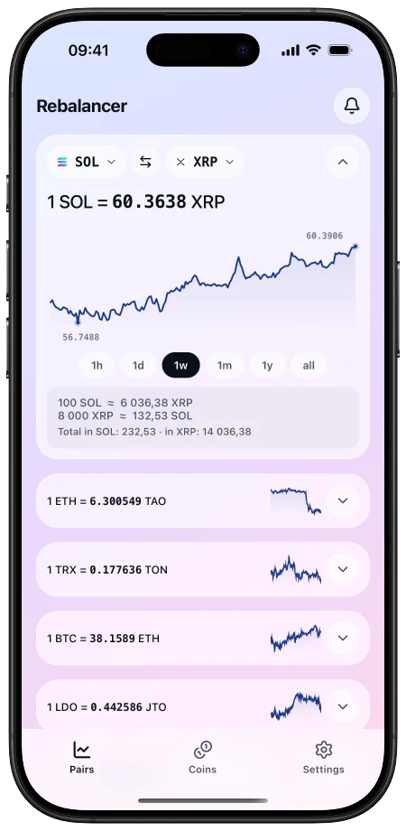
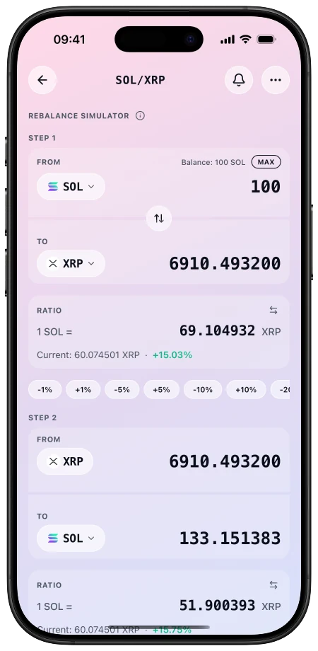
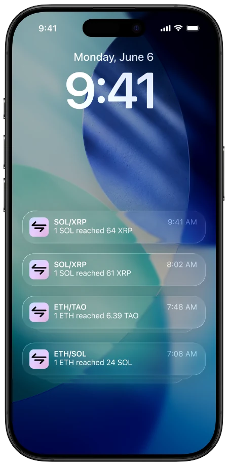
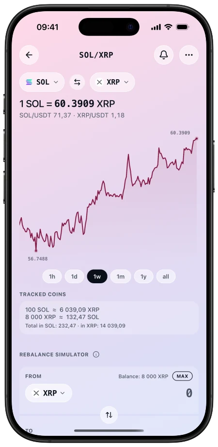
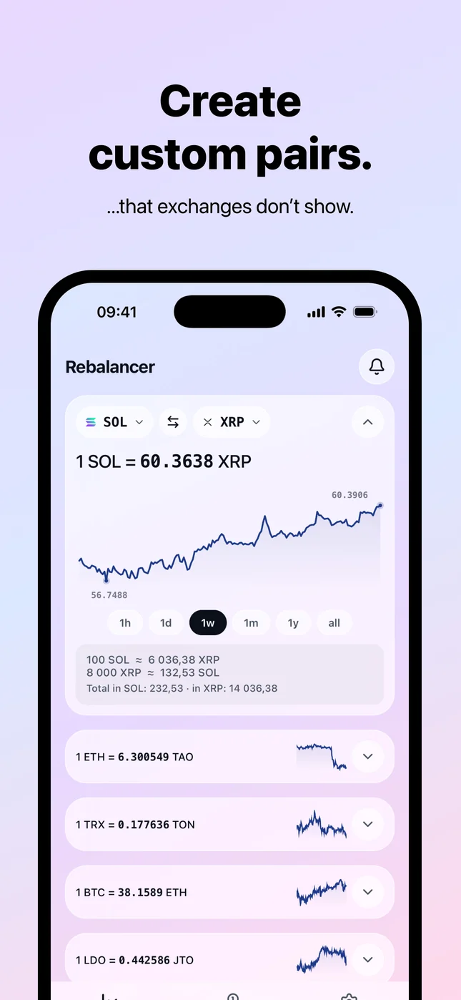
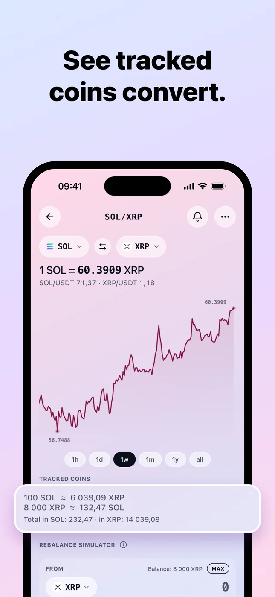
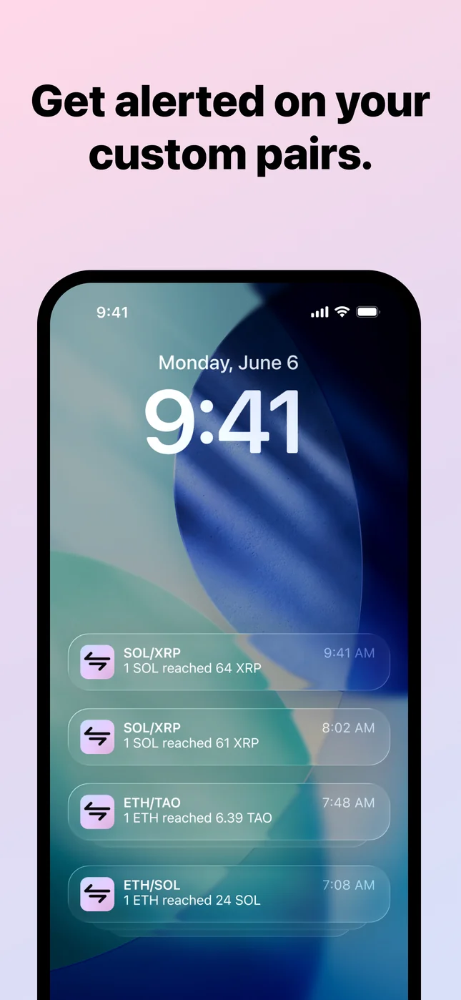
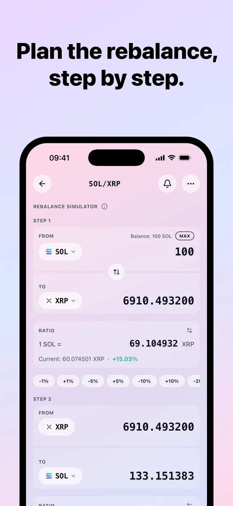
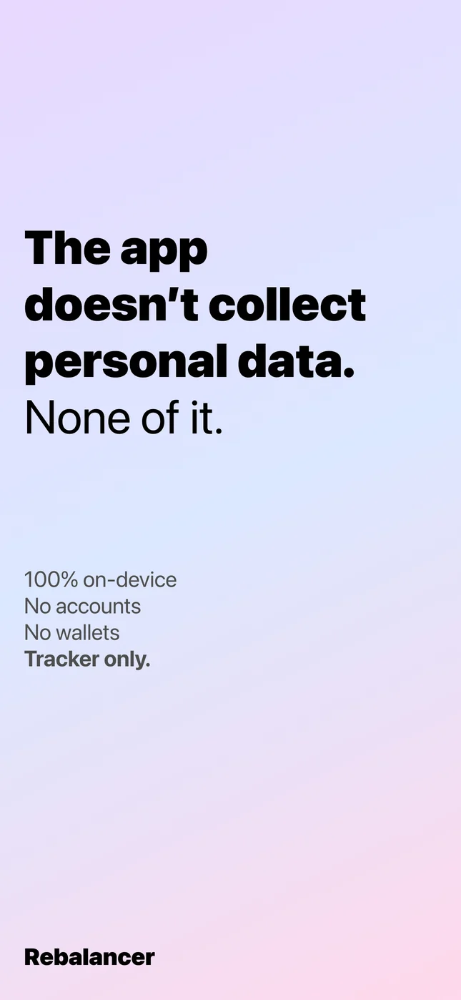
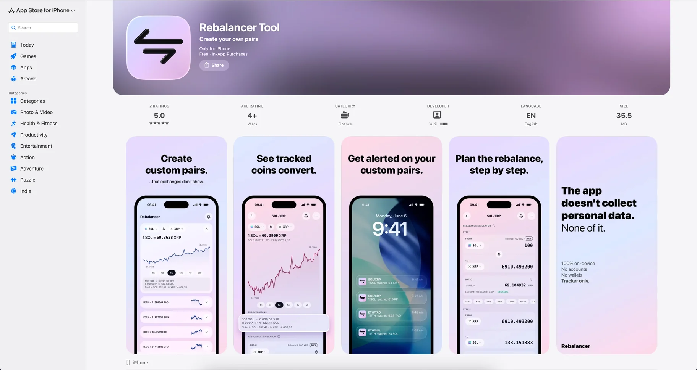

Rebalancer

Solo Lead UX + AI — design and build with Claude Code
Designed and built solo, from concept to App Store
Problem & Context
I rebalance crypto myself, and the pair I actually care about is almost never one an exchange will show me. Everything is priced against USDT. If I want to know where SOL stands against XRP, no exchange and no wallet treats that as something I can keep on a list and watch.
Roadmap
I owned every layer of this one — concept, product design, the iOS app, the backend, the servers, the APIs and the push notifications — built with Claude Code.
01
Research
Competitor analysis, reviews on the App Store and YouTube, Telegram channels, interviews with the crypto community. Nobody treated an ALT/ALT pair as something you could keep and watch.
Interviews and competitor review02
Prototype
Several concepts ran side by side. I committed to one — the pair as the only object the app asks you to create — and cut the rest instead of keeping options open.
Concepts cut to one03
Testing and iteration
Two rounds through TestFlight, then reworking what testers actually stumbled on rather than what looked worth polishing.
Two TestFlight rounds04
Publish on the App Store
Shipping was a design decision too: what to leave out so the first version could stand on its own, and what the listing should promise.
Shipped to the App Store05
Analytics and post-launch research
Analytics went in to replace opinion with behaviour, and the reading of reviews and channels carried on after release rather than stopping at launch.
Analytics wired inResearch
Three questions came first: whether anything already did this, who keeps running into it, and how few decisions each path could take.
Market analysis
I went looking for the app I wanted to buy. What exists are four workarounds, each stopping in a different place.
User personas
Three groups came out of the conversations and the reading. I belong to the first one myself, which is where the product started; the interviews put the other two beside it.
WhoHolds several alts and moves between them on the pair's ratio, not the dollar price.
PainNo exchange or wallet shows ALT/ALT directly — you read two USDT prices and divide them yourself.
WhoFollows the ratio by hand — a spreadsheet, or arithmetic in their head — and keeps coming back to check.
PainIt all rests on remembering to look. Nothing watches the number, so the moment can pass unnoticed.
WhoTechnical enough to chart a spread in TradingView or write their own indicator.
PainThe workaround never becomes a product: TradingView advises against alerts on spread charts, and a script needs an account and setup.
User flows
Each flow came out of one question: how few decisions can this take? What follows are the paths I settled on — and, in the last one, the line where the product deliberately stops.
Two picks, no form. The pair is the only thing the app asks you to create, so I kept it to two decisions — and made the sides swappable instead of expecting people to get the order right first time.
The prefill is the whole design. An empty field asks “what number?” — prefilled with where the ratio sits right now, it asks “how far from here?” — which is the question I always arrived with myself.
The permission branch saves the alert either way. Making the notification prompt a precondition would have meant losing the thing the person came to do.
The simulator answers “what would this do” without doing it. Free stops at two steps in a chain; deeper chains are where Pro begins — I put the paywall where the tool starts doing planning work, not at the front door.
The only flow here with no branch, and that's the point: Coins is a ledger of what you own. Anything that behaves like an exchange rate belongs to the simulator — keeping those apart is what stops the app from implying it can trade for you.
This is where I drew the product's edge. Rebalancer tells you the moment arrived and shows you the numbers; the trade happens on your exchange. Not a missing feature — a deliberate limit that keeps the app clear of custody, keys and order execution.
Prototype
There was no Figma stage. The prototype ran on a phone from the start, which is why the screens and the system behind them were decided together.
Screens
Four screens from the shipped app. The flows behind them are in the section above; this is what came out.

Watchlist — the open pair, then the rest as rows with sparklines

Simulator — each leg priced at a target ratio, against the current one

Alerts — delivered on the lock screen when a ratio crosses its threshold

Pair screen — both holdings restated in the coin on the other side
Biggest challenge
The alert is the product, and an alert has to arrive with the app closed — that one requirement pulled a backend behind a one-person design project. Price sources that answer a phone refuse a data centre, iOS background refresh cannot be trusted, and an alert that has fired must not fire again: every one of those is a server problem, not a screen.
Testing
Two rounds through TestFlight, on other people's phones. Each flow gave up one thing I had assumed, and each one changed the build.
01Creating a pair
FoundNobody could see how to enter the amounts they hold from the watchlist.
ChangedA prompt button on the watchlist, so holdings go in without leaving the screen you are on.
02Living with the watchlist
FoundThe first thing people reached for was reordering the cards.
ChangedPress and hold to drag — the order of the list is the user's, not mine.
03Pair detail and the simulator
FoundPeople expected the app to remember their holdings and carry them into the simulator.
ChangedA MAX button that fills in the saved holding, so the simulator starts from real numbers.
04Hitting the free limits
FoundThe paywall landed out of nowhere and read as a wall.
ChangedA plain note that the free limit is reached first, with a way to read about Pro — so going further is a choice, not an ambush.
Publish on the App Store
The listing had to sell the same idea in every storefront, so the cards lead with the pair — not the feature list.

Create custom pairs

See tracked coins convert

Get alerted on your pairs

Plan the rebalance

No accounts, no wallets
Analytics and post-launch research
Analytics is in place and the reading of reviews and channels carries on. The question it has to answer first: whether a first alert leads to a second — the signal that it has entered someone's routine.
Outcome
It's live. One person took it from concept to the App Store — design, app, backend, delivery.
What it settles into in daily use is the next thing to measure.

The product page as it stands in the store — the same pair-first pitch, from the subtitle down to the cards.
Reflection
The backend was bigger than I scoped. Next time I’d size the invisible parts first.
With AI I shipped end-to-end what would take a team — but only the parts I understood.